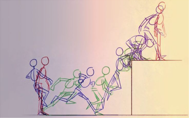
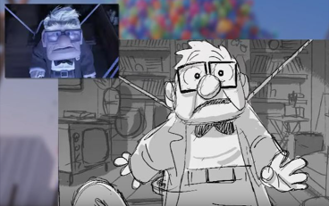

| Animacion | Esta imagen presenta la estructura de una animacion en dos dimensiones, cada fotograma capturado en la misma, es escencial para darle uso en su resultado final. |  |
| Animatic | Esta imagen presenta un storie board para la produccion de una pelicula, dicho de otraforma, se usanron decenas a cientos o miles de fotogramas asi, para visualizar el producto completo. |  |